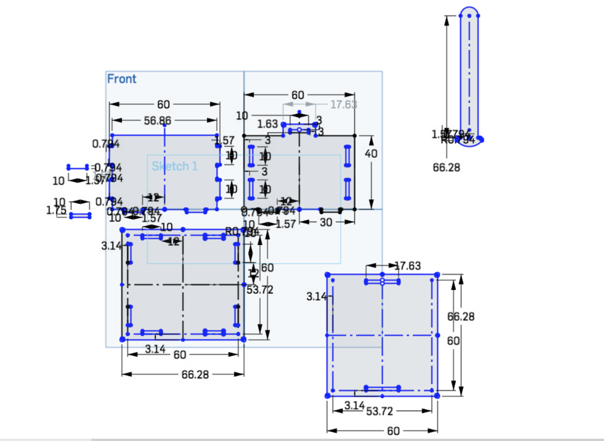

A5: Subtractive Fabrication and CNC Milling
by Kellie Dunn for HCDE 598
Here is my finished project. It is milled out of FR1, a material for making printed circuit boards.
The lid is secured with a rounded key that can be slid out to remove the lid.
I started my design in Onshape.
In sketch mode, I made a lot of use of the mirror tool to place my tabs and slots. When I had to come back later and resize things for tolerances, this was convenient because it automatically updated everything that had been mirrored. 3-point arc, sketch fillet, construction lines, and measurements tools were also my BFFs here.
Here is my initial sketch in Onshape, before adding dogbones and fillets:

Here is the final sketch, with everything finished correctly:
Here is a close up with those dogbones and fillets:
I extruded my parts to the thickness of the FR1 material, put them in an assembly, and made mates to see if they fit together. My first version didn't work!
Once I had everything sized correctly, it was looking good.
I made fastened mates for the sides and bottom, and slider mates for the lid and key. I wish that Onshape had a feature that detected collision of solid parts instead of overlapping them. Perhaps there's a workaround for that, but I didn't figure it out this week. Still, it functions as designed in the virtual assembly:
For fabrication, I exported each part/surface to a DXF file, opened those in KiCad, and plotted them to GBR files.
I couldn't install the Bantam Tools program on my laptop without updating MacOS, which I didn't want to do, so I put them on a USB drive and borrowed a laptop from The Mill to connect to the Bantam 3-axis desktop CNC machine.
Some helpful classmates pointed out that each piece of FR1 is a slightly different thickness, so I had to measure each new piece that I put into the mill and check the settings to make sure they cut correctly. I had a few instances of Bantam warning me that some corner/dogbone feature was too small to cut, so I went back into my Onshape sketch and corrected the side and front pieces and redid the workflow from Onshape to KiCad to Bantam before cutting those. No problems with the actual tool (everything stuck to the workbed fine, no mishaps), but it took quite a while to get all of the pieces cut!
I used the 1/32 inch flat end mill to make all of my cuts, but in hindsight I probably could have sized up for the outside cuts to save time. I also accidentally left the "traces" option on in my settings, but then ended up liking how that looked. I think it also made the pieces a little easier to fit together.

I can't be the only one who enjoys seeing the piece emerge from its blanket of sawdust when you vacuum it...

I did end up with one little booger scooped out of the front piece, which I thought was just a random mistake with the machine, but it appeared in the same place on the opposite side when I cut that file again, so it must be an artifact in my file from somewhere along the line. I woudl also correct that in a future rebuild.
Thanks to some good advice, some planning, and some luck, the tolerances for my joints are sufficiently tight to make a satisfying snap when you put them together. The slots for the key part on the lid are a little too snug to be comfortable to use, but it's so close to perfect that I can fix that with a little filing, rather than recut the piece. If I was making another box from the same file, I'd give the key a little more room to move.
Documentation for Assignment 1:
Onshape link
Acknowledgements:
Dave, for good advice about tolerances for optimal snap fit!
Cindy, for help with the mill!
Ping, for help with Onshape and milling camaraderie!